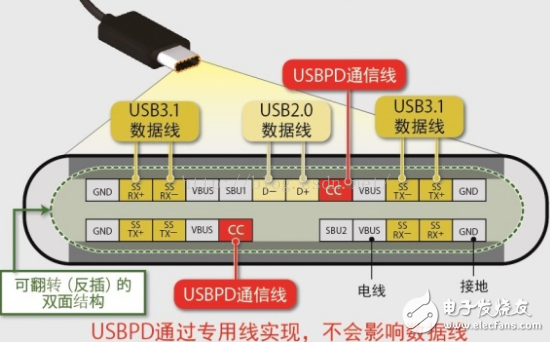
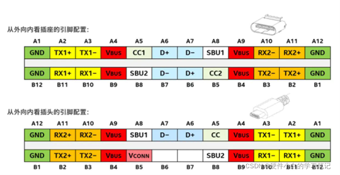

原因¶
机器打开熔丝(烧录了fuse)后,remount失败
解决¶
设置->关于手机,连续点击Build number 七下,提示You are Developer
设置->System->Developer options,打开OEM unlocking 菜单
adb reboot bootloader
fastboot flashing unlock
按音量下键选择 UNLOCK THE BOOTLOADER,然后按power键确认,重启

重启后,输入adb remount,提示需要reboot take effect,如下

adb reboot,重启后,再次输入 adb remount ,提示 成功,如下
